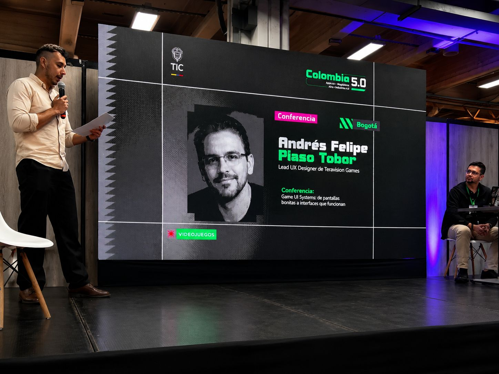
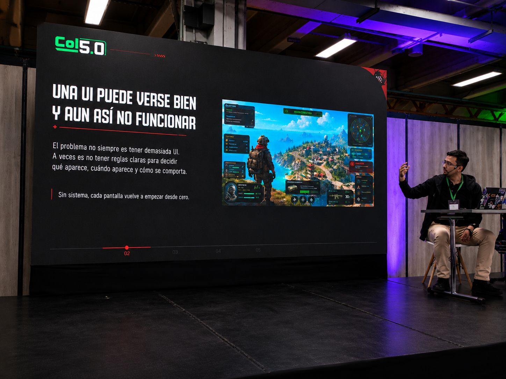
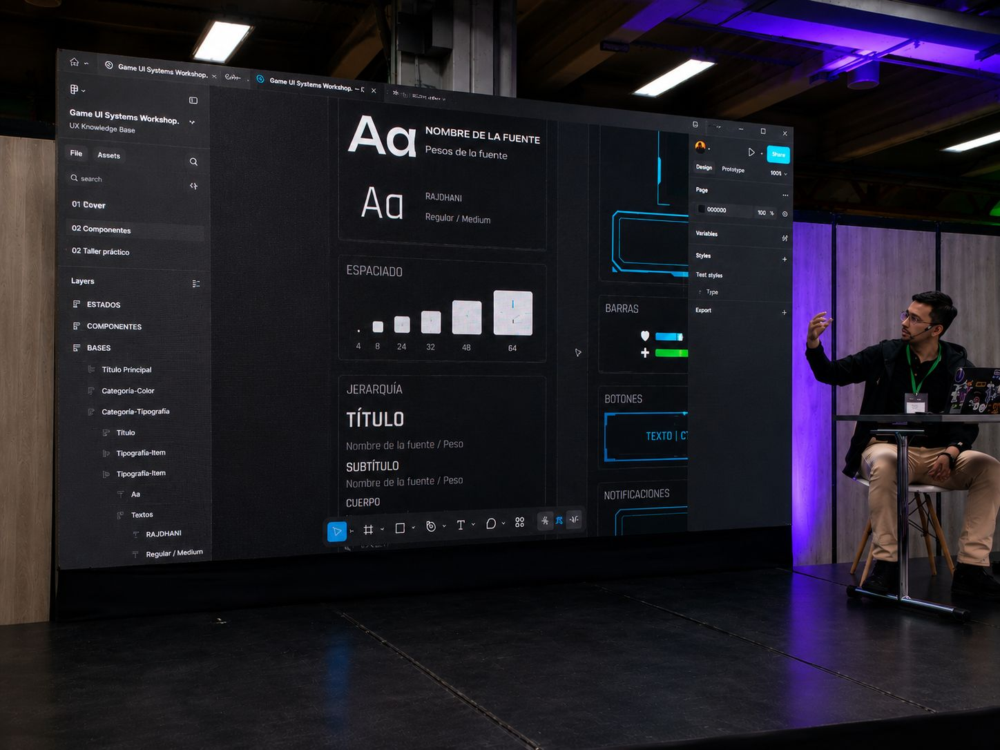
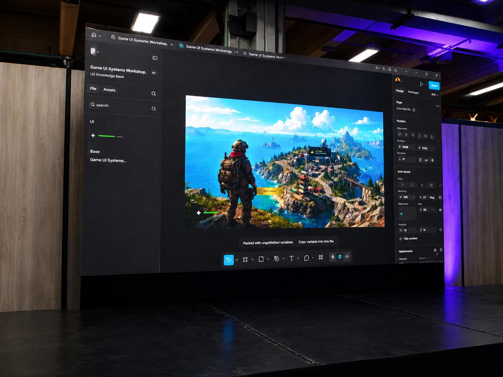
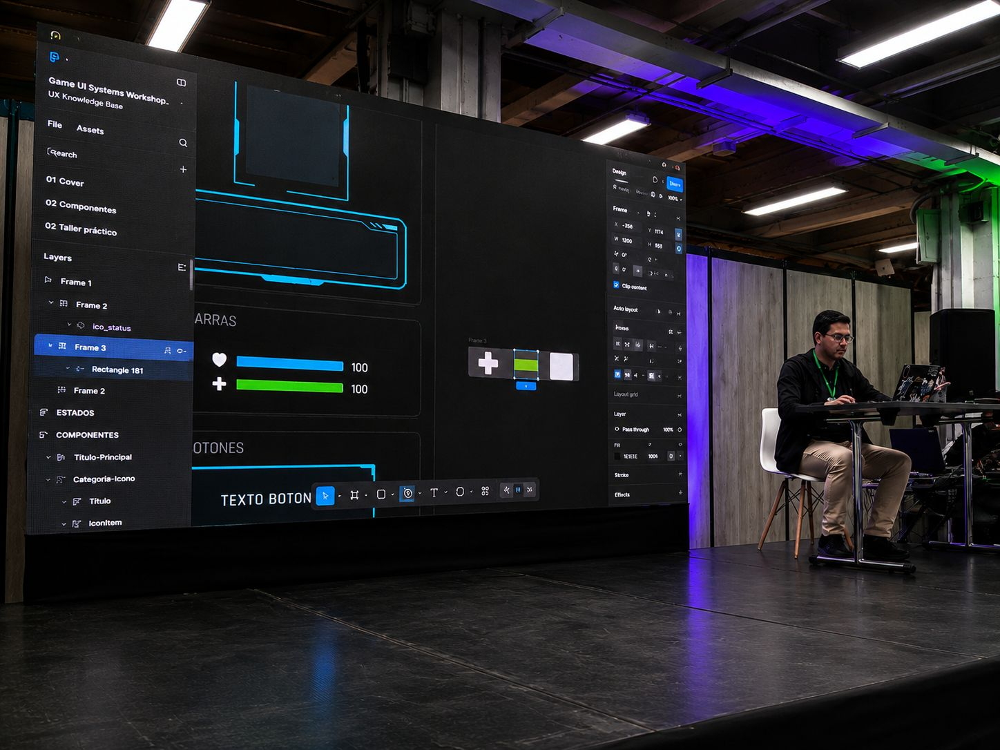
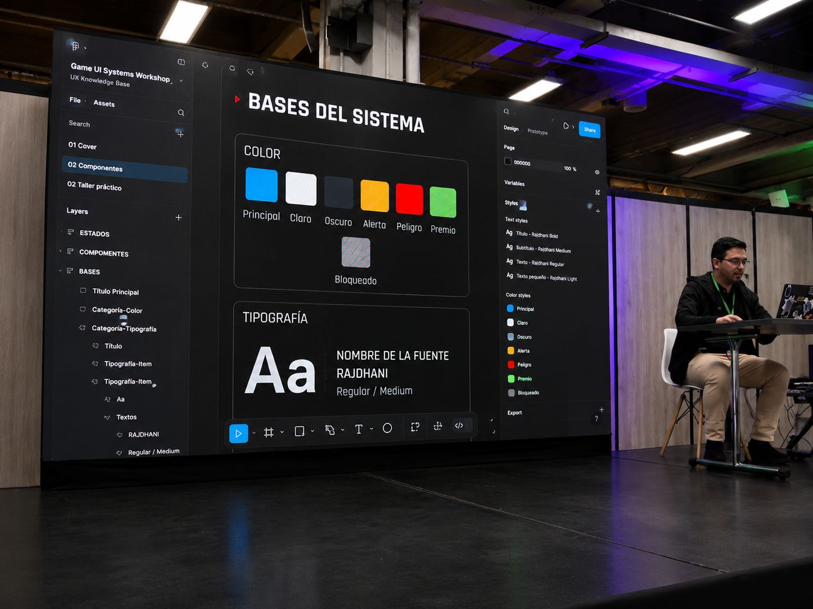
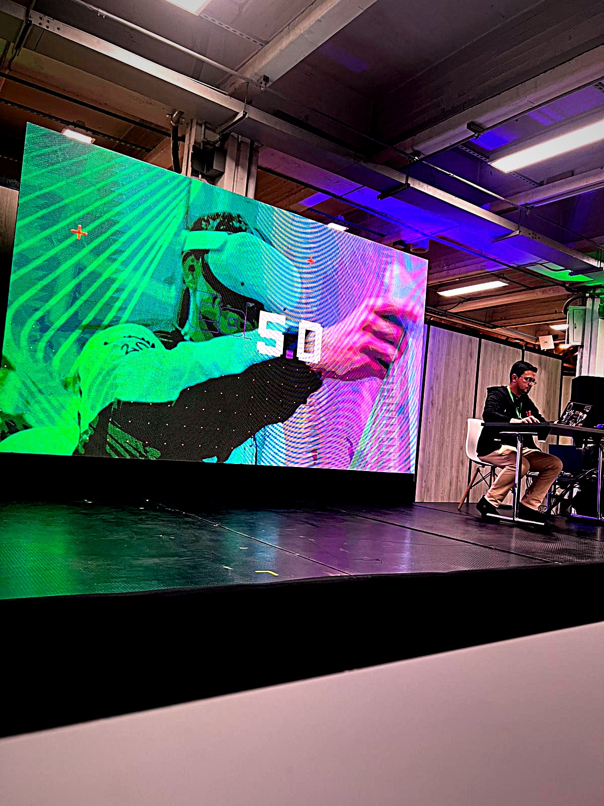
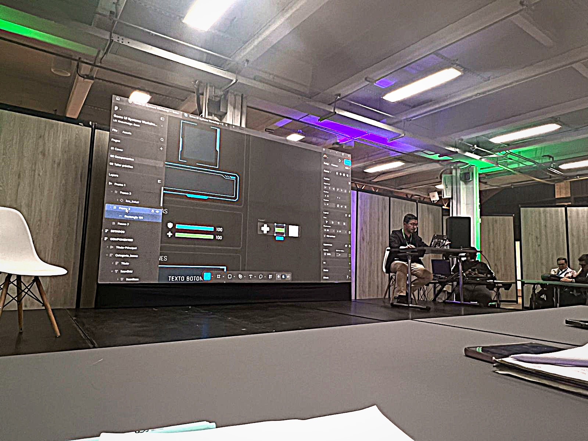

El diseño de interfaces interactivas y experiencia de usuario en la industria del gaming.
En esta conferencia aprendí sobre la importancia de diseñar interfaces de usuario que sean claras, organizadas y fáciles de utilizar dentro de los videojuegos. Se explicó que una buena interfaz no solo debe verse bien visualmente, sino también permitir que el jugador encuentre rápidamente la información que necesita para tener una mejor experiencia. También se habló sobre cómo los equipos de desarrollo utilizan componentes reutilizables para optimizar el trabajo, mantener una apariencia consistente y facilitar la creación de videojuegos para diferentes plataformas.
In this talk, I learned about the importance of designing clear, organized, and user-friendly interfaces for video games. It was explained that a good interface should not only be visually appealing but also help players quickly find the information they need for a better gaming experience. The presentation also covered how development teams use reusable components to optimize workflow, maintain a consistent appearance, and simplify game creation across different platforms.







